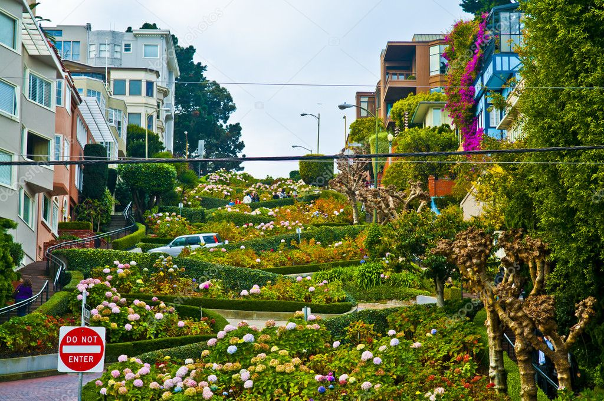
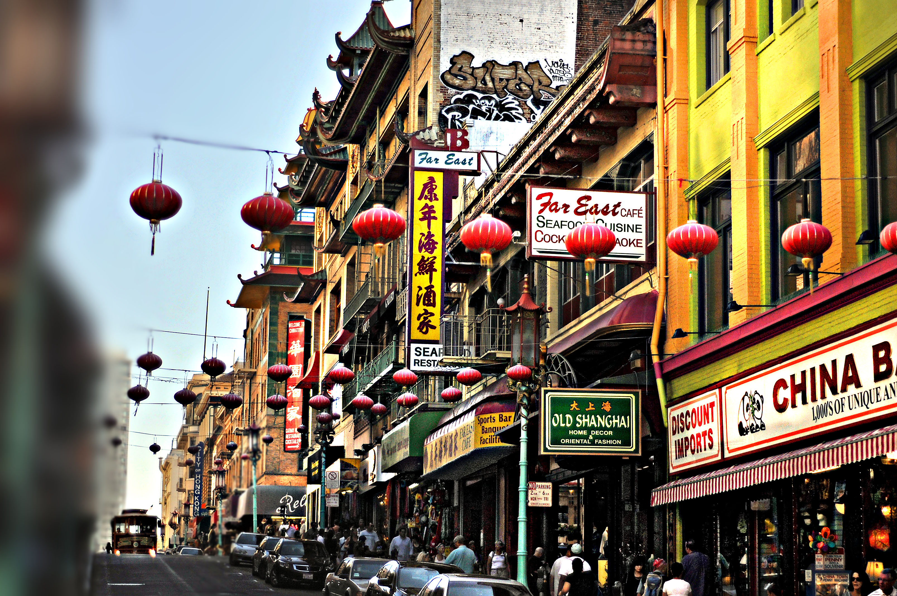

1. Golden Gate Bridge
A frequently visited bridge offering stunning views of San Francisco, it is renowned for its striking red hue and holds the title of California's most popular landmark.
History
One of the most renowned spans globally was built in 1933 and finished on May 22, 1937, totaling four years of development. This bridge links San Francisco with Marin County. In 1937, it earned the title of the longest span on the planet until 1964, when it was eclipsed by the Verrazano-Narrows Bridge in New York City. During the Great Depression, construction crews took advantage of the chance for steady employment, enduring hazardous conditions while constructing the roadway and towers above open water. The Golden Gate Bridge, officially opened in 1937, continues to stand as a remarkable landmark and a symbol of engineering prowess.
Details
The bridge's height is documented at 746 feet, making it the tallest suspension bridge until 1964. It features a driving length of 1.7 miles, accommodating six vehicular lanes and two pedestrian walkways. The overall span of the bridge measures 4,200 feet.

50th Anniversary
In 1987, San Francisco marked the 50th anniversary of the Golden Gate Bridge's inauguration. Over 300,000 individuals crossed the bridge in celebration, while around 800,000 took part in the festivities. The day commenced with "Bridgewalk '87," which served as a reenactment of "Pedestrian Day '37," attracting an estimated 300,000 participants to the roadway. The bridge was closed to vehicular traffic starting at 5 am, and from 6 am to 10 am, pedestrians were permitted to access the roadway.

View Points
Numerous sites near the Golden Gate Bridge offer stunning viewpoints ideal for capturing remarkable photographs.
Visit these view points:
- Fort Point
- Battery Spencer
- Lime Point Historic Lighthouse
- Vista Point
- Golden Gate Panorama View Point
- Golden Gate Observation Deck Hawk Hill
Love Locks
In the early stages of a relationship, a couple visits the Golden Gate Bridge. They acquire a lock, which they then secure to the fence, symbolizing the commencement of their bond. The couple's initials are inscribed on the lock. The love locks fence is adorned with thousands of locks, each representing the affection shared between couples.
Movies
The Golden Gate Bridge has been featured in numerous iconic Hollywood films.
Here is a list of those movies:
- "The Pursuit of Happyness" 2006
- "Godzilla" 2014
- "San Andreas" 2015
- "Rise of the Planet of the Apes" 2011
- "Star Trek IV: The Voyage Home" 1986
- "A View to a Kill" 1985
2. Painted Ladies

Painted Ladies are a collection of houses adorned in various colors, attracting the interest of millions of visitors during their trips to San Francisco.
History
San Francisco builders began erecting Victorian houses in the mid-1800s. The term "Painted Ladies" refers to the Victorian and Edwardian homes constructed during the 19th century. Thousands of these houses were built, but the construction came to an abrupt halt in April 1906. In 1963, one homeowner painted his residence in vibrant hues, including a mix of blues and greens. This architectural style became increasingly popular, and the application of various colors contributed to their visibility and uniqueness. The nickname "Painted Ladies" was popularized by a book released in 1978 that focused on these Victorian and Edwardian homes. Today, many homeowners continue to use bright paint colors to accentuate the beautiful details of these historic properties.

Movies/TV Shows
One of the most beloved aspects of the television series "Full House" is its setting and iconic imagery. This show, which ran from 1985 to 1995, is based in San Francisco. The opening sequence showcases the city, culminating in a scene where the characters are seen having a picnic with the Painted Ladies in the background.
Most Expensive Lady
722 Steiner St, San Francisco, CA 94117: Sold in year 2022 for $6 million dollars. It consists of
- Bedrooms: 6
- Bathrooms: 6
- Total structure area: 4,831
- Total interior livable area: 4,831 sqft
Tours
Embark on a Painted Ladies excursion through San Francisco City, discover the famous landmarks, and be guided to admire the stunning Painted Ladies residences. You'll familiarize yourself with all the iconic spots in San Francisco such as Union Square, Lombard Street, Chinatown, Golden Gate Park, Presidio of San Francisco, North Beach, Lower Haight, Hayes Valley, Western Addition, Marina District, so ensure you don't let this opportunity slip by. Take a tour!
Alamo Square Park
Enjoy quality time with loved ones, whether it's a family member, friend, coworkers or even your partner, visit Alamo Square Park. During spring and summer, it is the perfect time to go and visit for its weather. Relaxing on the grass with a beautiful view. In winter there is less of a crowd but you will expect chilly weather.
3. Lombard Street

History
Lombard Street ranks as one of San Francisco's most historic thoroughfares, tracing its origins back to the Gold Rush era of the mid-1800s. Established in 1853, it drew its name from Lombard Street in Philadelphia, Pennsylvania. The name Lombard is derived from the affluent and flourishing Italian region of Lombardy.
Driving
Drive through San Francisco's twisty road, Lombard Street. The most curviest road in San Francisco with eight harpin turns. Cruising along Lombard Street can be a thrilling adventure, yet it poses its own set of difficulties. The sharp curves and continual stream of visitors render it a pathway that demands precise steering.
Take a Walk
For those who wish to take in the sights without the burdens of driving, the walkways provide a safer, though steep, route to appreciate the street's distinctive layout and breathtaking views. The avenue is exquisitely adorned with florals and greenery, particularly hydrangeas, adding vibrant color against the gray asphalt. This careful landscaping, along with the red-brick pathway, forms a charming tableau, especially during the spring and summer seasons when the blossoms are at their peak.
Safety
The street has greatly caused an appearance in movies and is talked about when mentioning San Francisco, but the question asked is why the road is curved. The answer is for safety. The road is steep and the curves in the street reduce the danger of driving straight.
Fun Fact
While many travelers visualize Lombard Street as the most curved road in San Francisco, the truth is that it lies behind a different street. Vermont Street holds the title of the most twisty street in San Francisco and quite possibly in the entire U.S. It is sited near McKinley Square, between 20th and 22nd streets, and is a descending one-way road. It’s a thrilling winding street to navigate, much like Lombard Street. Keep a firm grip on your steering wheel and avoid bringing inexperienced drivers to this roadway.
Location: 1610 Lombard St, San Francisco, CA 94123
4. Muir Woods

Walking Experience
Strolling through the towering redwood giants as sunlight dances through the foliage is a truly breathtaking experience. For those who love to hike, this destination is absolutely essential. The redwood trees are renowned for being the tallest on Earth, soaring to heights of up to 379 feet. These magnificent giants are located exclusively along a narrow coastal strip in California and Oregon. Intriguingly, redwoods exhibit fire resistance and can actually flourish after a fire, as it helps to clear out the underbrush and promotes seed germination. Be sure to immerse yourself in the enchanting trees and the incredible hiking paths that provide an unforgettable experience.
History
Muir Woods is a National Monument that was created on January 9, 1908, by President Theodore Roosevelt. The Muir Woods National Monument, commonly referred to as the Redwood Grove, stretches 12 miles to the north of San Francisco within Marin County. It was named to celebrate the naturalist John Muir, who proclaimed the site to be “the finest tribute to tree enthusiasts that could ever be discovered in all the woodlands on Earth.”
Movie
Rise of the Planet of the Apes: A film released in 2011, helmed by Rupert Wyatt. The storyline unfolds in San Francisco, featuring scenes from the famous national park, Muir Woods National Park, even though the production was primarily filmed in British Columbia. In this motion picture, the apes have established Muir Woods as their sanctuary.
Tours
Set out on a breathtaking walk through the incredible Redwoods of Muir Woods. Choose a guided expedition to elevate your adventure. An experienced guide will take you to behold stunning views. You'll be escorted to the charming national park where you can explore with fellow visitors. The typical tour lasts around 5 hours, but this journey will be worth every moment.
Take tour now!

Location: 20 Muir Woods Rd, Mill Valley, CA 94941
5. Alcatraz Island

Interesting Fact/History
The designation "Alcatraz" was derived from "Alcatraces," which means “Island of the Pelicans", a name given by the Spanish navigator Juan Manuel de Ayala in 1775. Alcatraz officially opened its doors on August 11, 1934. It has served various purposes throughout its history, including that of a fortress, a military correctional facility, and a high-security federal prison. Alcatraz Island hosts the site of the decommissioned federal penitentiary, the oldest functioning lighthouse on the U.S. West Coast, early military defenses, and natural attractions such as tidal pools and a colony of seabirds.
What its known for
Originally established as a military fortress in the mid-1800s, it evolved into a federal correctional institution in 1934, housing infamous criminals like Al Capone. The 1962 Alcatraz prison breakout is a tale that has captivated the interest of travelers. The establishment closed its doors in 1963 due to high operational costs and deteriorating infrastructure. Today, Alcatraz is celebrated as a tourist attraction and is famous for having sheltered some of the most dangerous offenders.
Prison Escape
In 1962, inmates and bank robbers Frank Morris, along with John and Clarence Anglin, vanished from Alcatraz, the federal penitentiary located off the shore of San Francisco. They employed sharpened spoons to excavate through the prison walls, left papier-mâché dummies in their beds, and floated away on a raft constructed from 50 raincoats. Even now, their remains have never been located, prompting numerous individuals to speculate whether they met their end in the turbulent waters of San Francisco Bay or attained liberation. More Info
Tours
You will immerse yourself in the reality of how inmates existed on the isolated island. A ranger will lead you as you board a ferry from the San Francisco Bay coastline to the island. You will unravel the secrets of this island and witness firsthand the 1962 Alcatraz prison break. Join a guided excursion to uncover compelling stories about the facility's intriguing past. Reserve an Alcatraz tour guide today! Reserve Tickets
Location: Alcatraz Island
6. Chinatown

History
Chinatown of San Francisco is the oldest Chinatown in the United States established in 1848. The struggles of life in China drove numerous people to flee the country in pursuit of better economic prospects for their survival. Immigrants traveled to San Francisco, hoping for a new beginning to clear their debts or support relatives left behind. As the largest commercial port on the West Coast, San Francisco became the primary entry point for Chinese immigrants recruited as laborers for the development of the western territories. Historically, San Francisco made several attempts to dismantle Chinatown. To maintain their community within the city, the Chinese shaped their environment into an 'Oriental City'. They created a unique skyline for Chinatown, which quickly grew into a popular tourist destination.
Drive/Walk
Ready to embark on a journey through San Francisco's Chinatown? To elevate your adventure, start your exploration at the Dragon Gate situated on Bush Street. If you're keen on uncovering hidden gems, consider taking a scenic stroll through Chinatown. For awe-inspiring views, the evening is the ideal time to visit. The Dragon Gate will glow with its brilliant LED lights. As you proceed, you'll wind your way beneath the charming red lanterns that decorate Grant Avenue. Be sure to visit the renowned Waverly Place in Chinatown, situated between Washington and Sacramento streets. This area is famous for its vibrant balconies and stunning red lanterns that hang gracefully.
Cool Fact
The 2014 movie showcasing Godzilla takes place in San Francisco. One striking moment shows Godzilla moving through the avenues of Chinatown. The lively Red Lanterns embellish the scene for the Chinese community.
Location: Grant Ave, San Francisco, CA 94108